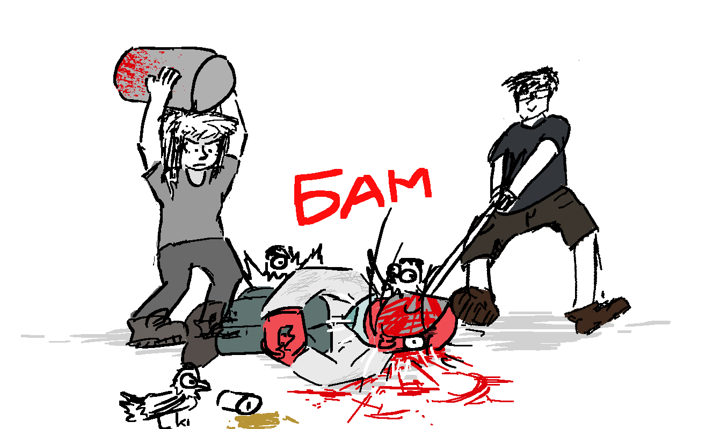
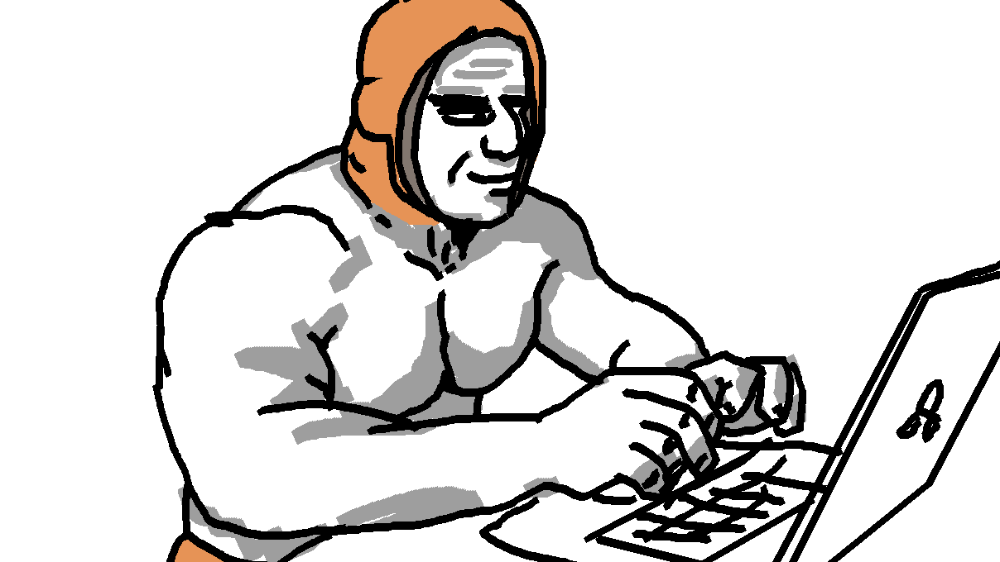

каскадный шизонанс
Успешный пользователь
О газете

Добро пожаловать!
???
об чем речь
Так что же в итоге произошло на сайте? Если кратко, то:
Содержание
Новости
-
2019
Внезапный день добра, внезапные фичи и отсутствие всяких там юзеров года
-
2020
Мрак и шытпостинг со внезапной сменой на адекватную а-а-а-активность
-
Лето
Комикс, лич, батуты и свадьбы
-
Осень
--> Вы находитесь здесь
Сборники контента
-
Цитаты деятелей
Добротные высказывания различных юзеров
-
Руминский архив 2020
Коллекция ссылок и интересных вещиц, созданных активистами
2019
Все знают, что на сайте есть чат. Но он не сохраняет сообщений на долгое время. Поэтому я решил создать чат на форуме.
ВНИМАНИЕ! Тема для общения, а не для бессмысленного флуда!MikFreeD

Я сейчас один умный вещь скажу, но выпуск ежегодной газеты в октябре подразумевает
забытый период до начала нового года. Но мы-то люди умные, в эту ловушку не попадемся. Так что сейчас расскажем за конец 2019. 
Произошло:
-
1
-
2
-
3
-
4
-
5
-
6
-
NIGHTDANGER — один из наиболее уважаемых олдфагов Ру-майна, воплощающий "дружелюбного" краба. Но куда чаще - боль, смерть и страдания. Поэтому имитация этого краба и является "первичной пыткой" олдфагов.
Порфирьевич -
Новогодний день добра

рассказываем преоклы
Юзер Года 2019
Как же там поживает Юзер Года 2019, спросите вы? А никак. Его не было. Вот и сказочке конец.
Начало 2020
мне в последнее время реально хочется перебанить всех здесь и стереть тему к хуям, просто блять собрание объёбанных ебланоидов которым блять нехуй делать в свободное время и высирают свою хуйню думая что это пиздец смешно и ваще смарите я долбаёб и я делаю долбаёбную хуйню
Витле
займитесь чем-нибудь полезным, сука

-
2
-
1
-
21
-
3
-
4
-
5
-
6
-
7
dev-urandom лох, объелся блох, сел на лавочку и сдох
Ясно
Лето 2020
Доброе утро, Толян!
Каждый
-
Комиксо-Батл
ч1
Где комикс?
соглы
Внезапно!
ага
-
7
-
6
-
5
-
4
-
3
-
2
-
1
{kind=link}
Осень 2020
-
1
-
2
Цитаты деятелей
Новенький с иголочки раздел газеты для знатных высказываний современных деятелей Румине! Цитаты эти характеризуют Румине 2020 во всём его многообразии и отлично передают дух времени. Жаль только, что идея пришла довольно поздно.
Админская секция
Насчет удаления говна, говно бывает разное, покажи мне говно и я скажу почему не удалил его.
south_park
привет
MadMoss
досведос
Прочие
Я не умирал, я уходил в Ад на перегруппировку
Капут-противогаз
вы че ебанутые, че несете, идите лучше на завод ребятки :chan:
Sab
p.s. если вашей цитаты здесь не оказалось, то не надо паниковать и звонить в спортлото оао госзнак регистрет 1980, просто иногда приходится идти на жертвы ради релиза в срок....
Архив
Полюбила паpня я,
Руминские народные частушки
Да оказался без фрундля.
Да на фрундля ж мне без фрундля,
Когда с фрундлем дофрундля!
Относительно новый раздел газеты, произошедший из пользовательского креатива. Теперь здесь будут храниться ссылки, картинки, ссылки на картинки, видосы и прочее добро, что я сочту достойным. А, как вы знаете, вкусы у меня весьма специфичные...
Примечательные ссылки
-
Новогодний день Добра 2019
Вдруг кто-то решит прочитать...
Творчество
-
Эпизод Румине "Истории о Былом". Криндж версия!
Что-то после этого настоящих эпизодов больше не видать. -
ой
Комиксо-батл
-
А не будет больше раундов!
Симулятор Румине

-
Симулятор Румине v5.2012+
Последняя выпущенная и пока что самая адекватная версия из всех. Там даже чейнджлог есть! -
...